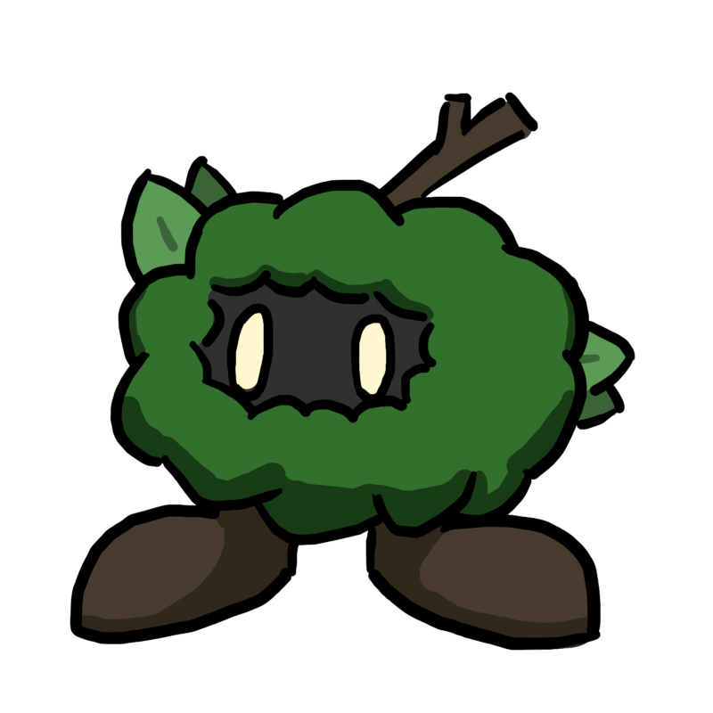

About
I'm a Game Design and Development student at RIT who is especially interested in the design of singleplayer games that are driven by story and exploration. With several different skills, such as game design, programming, and 2D art, I have many different roles that I can potentially fill on a team. I have worked on a few different personal projects already, and have many others that I would like to work on in the future.
Contact Info and Other Sites
- Email: egan@frelich.us
- Itch.io: https://lackofbeef.itch.io
- GitHub: https://github.com/LackOfBeef
Personal Projects
Various projects made outside of a school setting.
Canceled Untitled Rabbit Game

A metroidvania-style platformer game, with multiple areas, bosses, and abilities.
Academic Projects
Notable projects made in school.
Personal Projects
Projects made for personal reasons which demonstrate game design or software development skills.
Maybe Even Bun Fast
A game developed solo using Godot since January 2024.
A fast paced 2D action platformer, with an emphasis on allowing players to achieve a sense of speed.
Players shoot enemies while running through numerous short levels. A ranking system adds replayability.
Development allowed me to familiarize myself with Godot's tools, as well as learn how to polish various aspects of a game that I had not worked in previously.
Features
- 7 levels
- A functional save system and options menu
- A system that assigns ranks to the player's playthrough of a level based on speed, collectibles, and combat performance
Gifs


Canceled Untitled Metroidvania
A game developed solo using Unity and C# on and off from August of 2018 to December of 2022.
The game is a metroidvania-style platformer inspired by games such as Cave Story, Hollow Knight, Metroid: Zero Mission, and The Legend of Zelda: Link's Awakening. The gameplay focuses on exploration, with simple platforming and enemy patterns.
The game uses a melee combat system, with ranged abilities that can be found throughout the world. Exploration is relatively nonlinear, with a few different paths that can be taken through the game. Optional health and magic upgrades can be found as well.
Through the development of this game I learned how to create larger-scale projects. This game was a learning experience for me in both the programming and design aspects of game development.
The game makes use of Unity's built in animation tools and uses tilemaps for level designs. Throughout development I made careful plans for how the game's world and progression should be designed, being sure to think about the game as a whole.
The project was ultimately canceled due to its long development period creating a significant gap in quality between new and old code. It simply did not seem worth finishing unless it were to be remade from scratcch.
What was done
- 4 areas were playable and had their basic layouts completed.
- 3 bosses were partially implemented.
- 1 boss is fully playable, but lacking in animation.
- 7 abilities are implemented and functional.
- Several graphical elements were created, as well as some music.
Screenshots

Academic Projects
Projects that were made for the purposes of schoolwork and display relevant skills.
Cheese Master
A game developed solo over the course of 2 weeks using Javascript and PIXI JS.
A top down action adventure game with 5 levels. The game is centered around a dash mechanic which is used to evade enemies.
In this project I learned how to use Javascript to develop games for the web, and also practiced my game design skills. This was the first fully-featured game I've made for school outside of group projects.
The game uses AABB collision detection and loads levels from Javascript objects and arrays.
Features
- 5 levels
- A lock and key system
- 2 enemy types - slimes and bouncers
- Original pixel art graphics
Screenshots


Link to the game
Available to play here
Tower of Lumeth
A puzzle game developed in 5 weeks in a team of 5.
A top down block pushing puzzle game with 14 levels and 4 special abilities.
In this project I worked on level designs, fully designing most and revising the designs of the rest. I also created all of the art assets outside of menus.
Features
- Push, pull, swap, and teleport abilities
- 14 levels that teach and make use of these abilities
- Hand drawn graphics
Screenshots


Link to the game
Available on itch.io
My Artwork
Walk Cycle Animation

Plant Creature Design
Tumbleweed Skeleton Design

TTRPG Cover